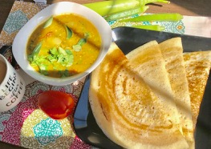

                                    <figure class="cards double">                                        
                                        <figcaption class="caption">
                                        
                                            <!--  Copy your recipie in here -->
                                            <h1><span style="color: #ff6600;"><strong>Dosa with Sambar</strong></span></h1>
                                            <p><strong>Dosa </strong></p>
                                            <p><strong>Ingredients</strong></p>
                                            <ul>
                                            <li>Idli rice 2 cups</li>
                                            <li>Dehusked black lentils (Urad dal) 1 cup</li>
                                            <li>Fenugreek&nbsp;(methi) 1 tsp</li>
                                            <li>Salt as required</li>
                                            <li>Water 2 cups</li>
                                            <li>Oil as required</li>
                                            </ul>
                                            <p><strong>Method</strong></p>
                                            <p>Soak rice and urad dal separately for 4-5 hours. Soak fenugreek with urad dal.</p>
                                            <p>In a blender/grinder, grind urad dal first followed by rice, to a fine paste. Add water while grinding as required. The batter should be of pancake consistency. Let the batter ferment overnight.</p>
                                            <p>Heat a flat skillet or frying pan, grease with oil and ladle the batter onto the pan and spread it to cover the entire pan. Keep the heat on medium. Drizzle a little oil onto it. Cook for about a minute. With a spatula fold the crisp dosa and transfer to a platter.</p>
                                            <p>Repeat with the rest of the batter. Serve hot with Sambar. Recipe link for for sambar: <p><a href="http://suscooking.com/sambar.html">http://suscooking.com/sambar.html</a></p></p>
                                            <p>&nbsp;</p>
                                            <p><strong>&nbsp;</strong></p>
                                            <p>&nbsp;</p>
                                            <p>&nbsp;</p>
                                            <p>&nbsp;</p>
                                            <!-- Copy Up to here-->

                                        </figcaption>
                                        
                                    </figure>
                                    